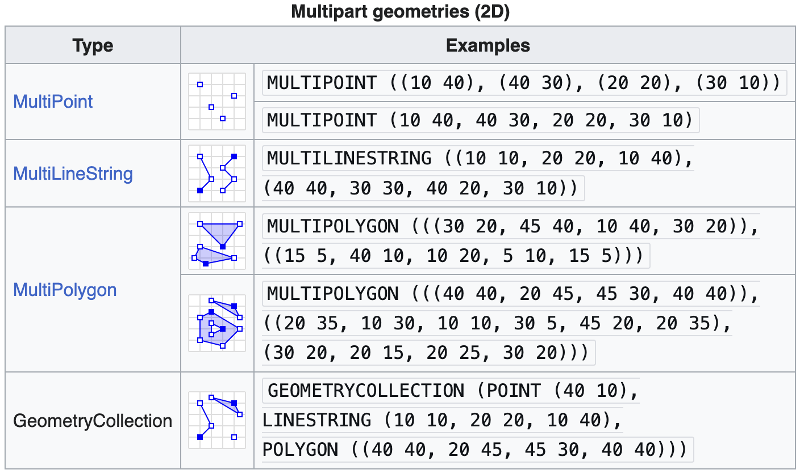

[1] "sf" "data.frame"Week 13 - STEM 691
Maps with {sf} and {ggplot}
The {sf} package
- {sf} represents vector spatial data much like a regular R data frame, but with a special column,
geometry, that represents the shape of each feature- last column is the geometry, specifically each cell in it is call a simple feature geometry (sfg)
- There are different types of sfgs (
POINT,LINESTRING,POLYGON,MULTIPOLYGON, etc)


geom_sf()

Specifying the aesthetics
Since it is a ggplot2 object, we can define aesthetics as usual, in this case, fill and color:

The {tigris} package
We can plot our output from tigris using ggplot2 and geom_sf():
- TN Counties

The {tigris} package
We can plot our output from tigris using ggplot2 and geom_sf():
- US States

YUCK!
Understanding CRS
- Geometries can be projected (projected Coordinate Reference System) or unprojected (geodetic Coordinate Reference System)
- Geodetic CRS = Earth as geodetic sphere (curved coordinates: lat/long)
- Projected CRS = Earth as a flat surface (flat coordinates: x/y)
Geodetic CRS = sphere
- Note: R still flattens, but you aren’t telling it how


Understanding CRS
Why use a geodetic CRS?
- Preserves true latitude and longitude

Why use a projected CRS?
- Preserves area, distance, or direction
- Distance and area calculations are more accurate
- Can created local maps with minimal distortion

Understanding Projections
- Projected CRS
- Three main projection families (ways to flatten globe):
- Cylindrical (e.g., Mercator)
- Conical (e.g., Albers)
- Planar (e.g., Lambert)
- Preserve different things (area, distance, direction, etc.)
- Three main projection families (ways to flatten globe):

Plotting the shapefile

Plotting our data
- Can we just plot it? knox_sites_sf is in 4326 and knox_zones_sf is in 2915…
- Yes! R automatically transforms the CRS of the
knox_sites_sfto match theknox_zones_sf- This is called “projecting-on-the-fly”

Joining spatial data - FIPS
- To make choropleths we often need to join data
- Yay! We have an easy variable to join on:
- The Federal Information Processing Standards (FIPS) have specific codes for states, counties, etc.
- FIPS often included in datasets

Joining spatial data - FIPS
Keep all rows from
x, and all columns fromxandy. Rows inxwith no match inywill haveNAvalues in the new columns.

Joining spatial data - FIPS
We can plot the states using geom_sf():

Plotting spatial data
- Add the data as an aesthetic in your ggplot object with
fill() - Be sure to include in your
aes()since it’s referring to data